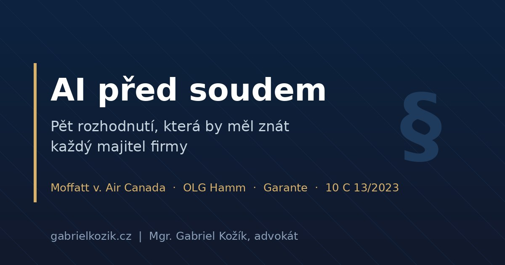

AI před soudem: Pět rozhodnutí, která by měl znát každý majitel firmy

O umělé inteligenci se hodně mluví v budoucím čase: co jednou bude regulováno, co jednou někdo zažaluje. Jenže rozhodovací praxe už existuje — soudy a úřady vydaly první rozhodnutí, která velmi konkrétně ukazují, kdo platí, když AI udělá chybu. Vybral jsem pět kauz, které stojí za pozornost každého, kdo AI ve firmě používá nebo o tom uvažuje. Bez hypu a bez strašení — jen co se skutečně stalo a co z toho plyne.
1. „Za chatbota neručíme." Ručíte. (Moffatt v. Air Canada)
Pan Moffatt potřeboval letět na pohřeb své babičky. Chatbot na webu Air Canada mu poradil, ať koupí letenku za plnou cenu a o pozůstalostní slevu požádá zpětně do 90 dnů. Jenže to nebyla pravda — skutečná pravidla aerolinky zpětnou slevu nepřipouštěla, a tak mu ji odmítla vyplatit.
Před kanadským tribunálem pak Air Canada předvedla obhajobu, která vstoupila do dějin: chatbot je prý „samostatná právní entita odpovědná za svá vlastní tvrzení". Tribunál to odmítl. Firma odpovídá za veškeré informace na svém webu — ať pocházejí ze statické stránky, nebo z AI. Přiznaná náhrada 812 kanadských dolarů je směšná částka, ale princip je zásadní: schovat se za chatbota nefunguje.
2. Evropská verze: chatbot mluví za firmu (OLG Hamm)
Kdo by namítl, že Kanada je daleko, pro toho má odpověď Vrchní zemský soud v Hammu. Chatbot německé kliniky tvrdil zákazníkům, že tamní lékaři jsou specialisté na plastickou chirurgii. Nebyli. Soud v květnu 2026 rozhodl, že chatbot je nedílnou součástí obchodní organizace — firma za jeho výroky odpovídá, jako by je pronesla sama. Rozhodnutí zatím není pravomocné (bylo připuštěno dovolání), ale směr je stejný jako v Kanadě.
A doma? Český soud takový případ zatím nerozhodoval, doktrína ale dovozuje odpovědnost z obecných pravidel občanského zákoníku — mimo jiné z odpovědnosti za pomocníka (§ 2914 o. z.). Nástroj, který za vás komunikuje, je právně stále vaše komunikace.
3. GDPR na AI dopadá už dnes: milionové pokuty z Itálie
Zatímco na první českou AI kauzu čekáme, italský úřad pro ochranu dat už trestá. Provozovatel AI společnice Replika dostal pokutu 5 milionů eur — chatbot zpracovával osobní údaje bez právního základu a bez ověření věku uživatelů. OpenAI vyfasovala za nesoulad ChatGPT s GDPR pokutu 15 milionů eur.
Pro české firmy je podstatné, že GDPR je v celé EU totožné. A že náš ÚOOÚ umí uložit citelnou pokutu, ukázal v kauze Avast (351 milionů korun) — ta se sice AI netýkala, ale demonstruje, jak vážně úřad bere nakládání s daty ve velkém. Kdo dnes vkládá údaje klientů do AI nástrojů bez právního základu, neriskuje „až v budoucnu". Riskuje teď.
4. Váš AI vizuál si může vzít konkurence (Městský soud v Praze)
Jediný přímý český AI judikát se týká autorského práva. Podnikatel si nechal v DALL-E vygenerovat obrázek, konkurence ho převzala a on se domáhal autorské ochrany. Neuspěl. Městský soud v Praze (sp. zn. 10 C 13/2023) rozhodl, že obrázek vygenerovaný AI není autorské dílo — chybí tvůrčí činnost fyzické osoby. Prompt je jen „námět či myšlenka", ne dílo.
Vaše AI grafika a texty nejsou samy o sobě ničím chráněny — konkurence je může legálně převzít. A obráceně: když AI výstup poruší cizí práva, odpovídá ten, kdo ho zveřejnil. Tedy vy.
Hranice není absolutní — tvůrčí lidský vklad při úpravě výstupu může ochranu založit, posuzuje se ale případ od případu. Pro marketing z toho plyne praktická rada: klíčové vizuály a texty nestavět jen na surových AI výstupech a vztahy s agenturami ošetřit smluvně.
5. Ani profesionálové nejsou imunní: 25 000 Kč za vymyšlenou judikaturu
Abych si nedobíral jen podnikatele — příklad z mého vlastního cechu. Pražský advokát podal v prosinci 2025 ústavní stížnost sepsanou s pomocí AI. Obsahovala dvanáct citací rozhodnutí Ústavního soudu a Evropského soudu pro lidská práva; podstatná část z nich neexistovala a zbytek byl hrubě zkreslen. Výsledek: pořádková pokuta 25 000 Kč. Obrana, že šlo o placený profesionální AI nástroj, nepomohla. Za obsah odpovídá vždy člověk, který ho podepsal.
Co se mění právě teď (stav k červenci 2026)
K rozhodnutím se přidává i legislativa, a to rychleji, než si většina firem připouští. Od 2. srpna 2026 — tedy za pár týdnů — začíná platit povinnost transparentnosti podle čl. 50 AI Actu: chatbot se musí „přiznat", že je AI, a AI generovaný obsah včetně deepfakes se musí označovat.
Červnový balíček Digital Omnibus sice odložil povinnosti pro vysoce rizikové systémy (HR screening, scoring, úvěrování) na prosinec 2027, respektive srpen 2028, ale pozor: odklad není odpuštění — a transparentnosti, zákazů nepřípustných praktik ani GDPR se netýká vůbec. A do 9. prosince 2026 má Česko transponovat novou směrnici o odpovědnosti za vadné výrobky (EU) 2024/2853, která staví software a AI naroveň fyzickému výrobku: objektivní odpovědnost bez ohledu na zavinění a vyvratitelná domněnka vady, pokud se systém choval „neobvykle".
Závěr: co z toho plyne pro vaši firmu
Společný jmenovatel všech pěti kauz je stejný: odpovědnost za AI nikdy nenese nástroj, ale ten, kdo ho použil. Prakticky to znamená pět věcí. Každý AI výstup směrem ke klientovi má schvalovat člověk, který mu rozumí a může ho zastavit. Firma má mít interní pravidla, kdo smí co vkládat do jakých nástrojů — zejména osobní údaje a know-how. Smlouvy s agenturami, dodavateli i klienty mají říkat, kdo odpovídá za AI výstupy. Je třeba vědět, jestli jste v roli uživatele, nebo už „výrobce" AI systému — vlastní značka na chatbotu či úprava modelu znamená jinou ligu povinností. A veďte evidenci: logy, verze, kdo co schválil. Od prosince může při sporu platit domněnka vady — a dokazovat budete vy.
Používáte ve firmě chatbota, AI marketing nebo vkládáte do AI data klientů? Rád s vámi projdu, kde jsou vaše rizika — úvodních 30 minut je zdarma a lidskou řečí.
Domluvit konzultaciZdroje a doporučené čtení:
- Moffatt v. Air Canada, 2024 BCCRT 149 (Civil Resolution Tribunal, Britská Kolumbie)
- OLG Hamm, sp. zn. I-4 UKl 3/25, rozsudek z 12. 5. 2026 (nepravomocný)
- Rozhodnutí italského úřadu Garante ve věcech Replika (5/2025) a OpenAI
- Městský soud v Praze, sp. zn. 10 C 13/2023, rozsudek z 11. 10. 2023
- Nařízení (EU) 2024/1689 (AI Act), zejména čl. 25, 26 a 50
- Směrnice (EU) 2024/2853 o odpovědnosti za vadné výrobky
- Zákon č. 89/2012 Sb., občanský zákoník (§ 2914)